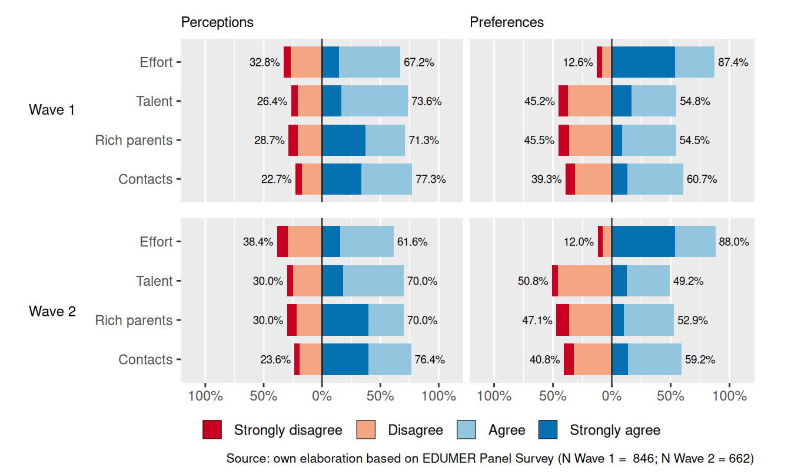
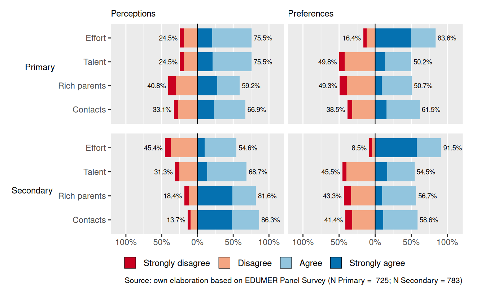
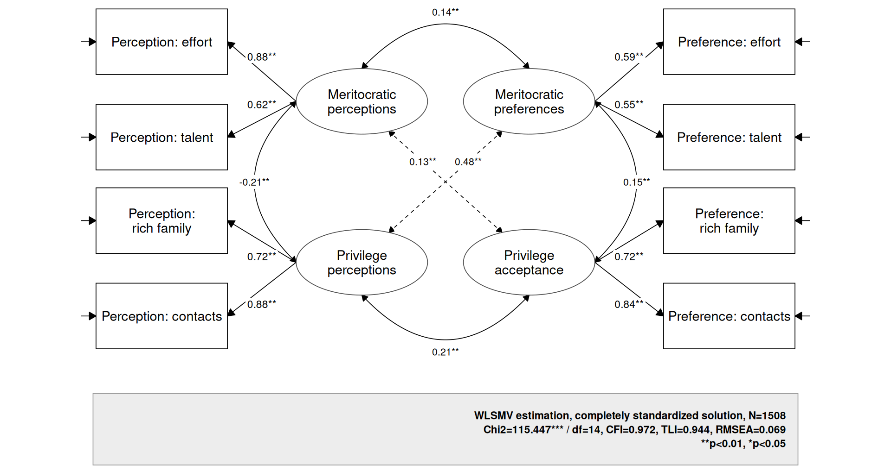

| Model | χ2 (df) | CFI | RMSEA (90% CI) | Δχ2 (Δdf) | ΔCFI | ΔRMSEA | Decision |
|---|---|---|---|---|---|---|---|
| Configural | 117.7 (68) | 0.991 | 0.035 (0.024-0.046) | 0 (0) | 0 | 0.000 | Reference |
| Weak | 122.51 (72) | 0.990 | 0.034 (0.024-0.045) | 4.809 (4) | 0 | -0.001 | Accept |
| Strong | 128.53 (80) | 0.991 | 0.032 (0.021-0.042) | 6.02 (8) | 0 | -0.002 | Accept |
| Strict | 130.17 (84) | 0.991 | 0.031 (0.02-0.04) | 1.635 (4) | 0 | -0.002 | Accept |
Results
This section is organized into three parts. First, we present descriptive statistics and visualizations of the survey items measuring meritocratic perceptions and preferences, as well as perceived privilege and its acceptance. Second, we report the results of the confirmatory factor analysis (CFA) conducted to evaluate the proposed four-factor structure of meritocratic perceptions, meritocratic preferences, perceived privilege, and privilege acceptance (\(H_1\)). Based on these results we analyze the associations between the different dimensions of meritocracy and privilege, which is at the core of our investigation (\(H_2\)). Finally, we present the results of multigroup analyses to assess measurement invariance across cohorts and waves (\(H_3\)).
Descriptives
Figure 1 displays the response distributions for the meritocracy and privilege items by each survey wave, distinguishing perceptions from preferences. A clear and stable pattern emerges regarding how students perceive social rewards to operate and how they think they should operate in both waves. In the perception items, agreement is consistently high for contacts, parental wealth, and talent, whereas effort displays the lowest perception. In the preference items, by contrast, effort is overwhelmingly endorsed as the legitimate basis for rewards, exceeding by far its perceived role in practice. Noticeably, in terms of preferences, is the talent item the one showing the lower frequency, being the use of contacts and family resources more preferred than this meritocratic stance. Roughly, more that half of respondents in both waves express an acceptance of the influence of rich parents and contacts, revealing that such privilege criteria are not uniformly seen as illegitimate way to get ahead.

Figure 2 shows the distribution of responses for the same items, but this time by cohort (primary vs. secondary education). Different from the previous analysis by wave, the cohort comparison reveals a more pronounced contrast between perceptions and preferences regarding meritocracy and privilege.Regarding the primary and secondary education cohorts, some contrasts emerge as seen in . In terms of perception, the meritocratic items (effort and talent) are the ones with the highest agreement in the youngest cohort and the lowest in the oldest one. At the same time, the privilege perceptual items (contacts and family wealth) are the ones with the lowest agreement in the youngest cohort and the highest in the oldest one. This pattern is consistent with evidence on a “disillusionment” with meritocracy as students progress through the educational system (Fan et al., 2026; Tang et al., 2025). In terms of preferences, the pattern is more stable across cohorts, with effort being the most endorsed legitimate basis for reward, while talent, family wealth, and especially contacts remain more ambivalent. As in the previous descriptive analysis by wave, contacts are more often accepted than rejected in both cohorts. Overall, the cohort comparison reveals a widening gap between an effort-centered meritocratic ideal and the perceived importance of privilege advantages in practice.

Multidimensional measurement of meritocracy and privilege
Figure 3 presents a diagram of the general measurement model that estimates the four dimensions of meritocracy and privilege for both waves and cohorts (pooled sample). The hypothesized four latent dimensions are represented by circles in the middle, each corresponding to two observed indicators (rectangles) that are expected to load on the corresponding latent factor. The model shows a reasonable –though not fully satisfactory– fit to the data (CFI = 0.97; TLI = 0.94; RMSEA = 0.07). Although the CFI falls within commonly accepted ranges, the RMSEA and TLI remain below conventional thresholds, indicating that fit is acceptable in some respects but not uniformly strong across indices. As we will see later on, part of the misfit relates to some differences across cohorts, which are explored in the subsequent multigroup analyses.

All standardized factor loadings are statistically significant and generally moderate to strong, though their magnitude varies across dimensions. For meritocratic perceptions, the effort item shows a particularly strong loading (\(\beta\) = 0.88) and talent a moderately strong loading (\(\beta\) = 0.62). Meritocratic preferences exhibit more even, but somewhat weaker, loadings for effort (\(\beta\) = 0.59) and talent (\(\beta\) = 0.55). For perceived privilege, both indicators load strongly, especially contacts (\(\beta\) = 0.88), followed by coming from a rich family (\(\beta\) = 0.72). Privilege acceptance also shows strong and relatively balanced loadings, with contacts (\(\beta\) = 0.84) and rich family (\(\beta\) = 0.72), indicating that both indicators are similarly representative of this latent dimension. In general, the factor loadings suggest that the observed indicators are reasonably good measures of their respective latent constructs, with some variation in strength across dimensions.
The analysis of latent correlations gives us important insights into the relationships among the four dimensions (\(H_2\)). As stated before, allowing these four dimensions to correlate permit us to open the black-box of meritocracy and privilege beliefs, which both in the common sense as well as in the literature are often treated as the oposite poles of a single continuum. The results show that the four dimensions are indeed interrelated, but not perfectly aligned, indicating that students’ beliefs about meritocracy and privilege are complex and multifaceted. To begin with, all the correlations but one are actually positive. The only negative correlation is between meritocratic perceptions and privilege perceptions, which is consistent with the idea that perceiving society as more meritocratic is associated with a lower recognition of the role of privilege (and vice versa). Some positive associations also show a more intuitive pattern, such as the positive correlation between meritocratic perceptions and meritocratic preferences – similar to evidende in adult population as in Castillo et al. (2023) –, suggesting that students who perceive society as more meritocratic also tend to endorse meritocratic ideals. The strongest association is between privilege perceptions and meritocratic preferences, indicating that students who recognize the role of privilege in society are also more likely to endorse meritocratic ideals. However, other correlations suggest relationships that are less straightforward, as for instance the positive correlation between meritocratic preferences and privilege acceptance, which may indicate that despite perceiving meritocracy, students may still accept the legitimacy of privilege advantages. Something similar occurs with positive association between meritocratic and privilege preferences, which may suggest that students who endorse meritocratic ideals may also recognize the legitimacy of privilege advantages. Although these last correlations are modest in size, they highlight the complexity of students’ beliefs about meritocracy and privilege, suggesting that these dimensions are not simply opposites but rather can coexist in students minds without necessarily undermining one another.
Stability of meritocracy and privilege beliefs
Longitudinal invariance
Table 1 reports the results of the longitudinal invariance tests. Longitudinal invariance is a particular case of group comparison, whereby the groups are the same individuals measured at two different time points – which is controlled in the model by correlating the unique item variances (Widaman et al., 2010). The table shows the fit indices for the configural, weak (metric), strong (scalar), and strict invariance models, along with the chi-square difference tests comparing each nested model. Overall, the scale achieved the strongest level of invariance (strict invariance) across the two waves. The strict model showed good fit indexes, \(\chi^2\)(84) = 130.17, CFI = 0.991, RMSEA = 0.031 (90% CI: 0.020–0.040). Moreover, compared with the strong (scalar) model, the deterioration in fit was negligible: \(\Delta \chi^2\)(4) = 1.635, \(\Delta\)CFI = 0.000, and \(\Delta\)RMSEA = -0.002. These differences fall well within commonly used cutoffs for invariance evaluation (Chen, 2007), indicating that constraining residual variances in addition to loadings and thresholds/intercepts is tenable.
Substantively, achieving longitudinal invariance for the model of perceptions and preferences for meritocracy and privilege implies that the instrument allows the comparability of scores and latent parameters within students over time. This means that any observed changes in students’ scores can be interpreted as true changes in their beliefs rather than artifacts of measurement differences. In order to compare changes over time, Table 2 reports the latent means of the four dimensions in each wave, estimated from the strict invariance model, in which the means of wave 1 are fixed to zero as the reference and those of wave 2 are freely estimated; the wave 2 estimate is therefore the change in the mean of each dimension between waves, which is tested with a Wald test. Latent means are expressed in the metric of the first indicator of each factor, so the last column reports the change in standard deviation units of the wave 1 latent distribution. None of the four dimensions changed significantly between waves (all adjusted \(p\) > .30). Perceived meritocracy declined slightly (\(\Delta\) = −0.29, \(p\) = .118, \(d\) = −0.14) and perceived privilege increased slightly (\(\Delta\) = 0.15, \(p\) = .080, \(d\) = 0.13), a direction compatible with a growing perception of privilege, but neither difference is reliably different from zero. Preferences were practically unchanged, both for meritocracy (\(\Delta\) = −0.08, \(p\) = .458) and for the acceptance of privilege (\(\Delta\) = −0.12, \(p\) = .119). Overall, students’ beliefs about meritocracy and privilege were stable over the period, with at most small shifts in the perception of how rewards operate.
| Dimension | Wave 1 | Wave 2 (SE) | z | p | p (Holm) | d |
|---|---|---|---|---|---|---|
| Perceived meritocracy (effort and talent) | 0 (ref.) | -0.286 (0.183) | -1.56 | .118 | .354 | -0.14 |
| Perceived privilege (rich parents and contacts) | 0 (ref.) | 0.149 (0.085) | 1.75 | .080 | .320 | 0.13 |
| Preference for meritocracy (effort and talent) | 0 (ref.) | -0.075 (0.101) | -0.74 | .458 | .458 | -0.08 |
| Acceptance of privilege (rich parents and contacts) | 0 (ref.) | -0.115 (0.074) | -1.56 | .119 | .354 | -0.10 |
Note: Latent means from the strict longitudinal invariance model (\(N\) = 591); wave 1 means are fixed to 0 (reference). Wave 2 estimates are the wave 2 − wave 1 differences, tested with Wald tests; \(p\) (Holm) adjusts for the four comparisons. \(d\) = difference divided by the latent standard deviation in wave 1.
Cohorts comparability
Table 3 reports the results of the cross-cohort (multigroup) invariance tests comparing primary and secondary students. As in the longitudinal case, the sequence starts from a configural model, which imposes the same four-factor structure in both cohorts but lets all parameters vary freely, and then progresivelly adds equality constraints on factor loadings (weak invariance) and on loadings and item thresholds (strong invariance). Since the indicators are ordinal, thresholds play the role that intercepts play for continuous items. The configural model shows a good fit, \(\chi^2\)(28) = 47.65, CFI = 0.991, RMSEA = 0.041, indicating that the same four-factor structure holds in both cohorts (using data of wave 1). However, the scale did not achieve weak invariance: constraining the factor loadings to be equal significantly worsened fit, \(\Delta \chi^2\)(4) = 20.77, \(p\) < .001. An additional analysis following the alternative sequence proposed by Svetina et al. (2020), which tests the equivalence of thresholds before loadings, led to the same conclusion: invariance between primary and secondary students was not achieved either (see supplementary material). The changes in CFI (\(\Delta\)CFI = −0.009) and RMSEA (\(\Delta\)RMSEA = 0.013) are close to, though still within, the conventional cutoffs (Chen, 2007), so at the global level the evidence against loading invariance is not overwhelming. Adding the threshold constraints worsened fit further, \(\Delta \chi^2\)(8) = 35.89, \(p\) < .001, with \(\Delta\)CFI = −0.011, which exceeds the recommended cutoff.
| Model | χ2 (df) | CFI | RMSEA (90% CI) | Δχ2 (Δdf) | ΔCFI | ΔRMSEA | Decision |
|---|---|---|---|---|---|---|---|
| Full invariance sequence | |||||||
| Configural | 47.65 (28) | 0.991 | 0.041 (0.019-0.06) | Reference | |||
| Loadings | 71.3 (32) | 0.981 | 0.054 (0.037-0.071) | 20.77 (4) *** | -0.009 | 0.013 | Reject |
| Loadings + Thresholds | 103.09 (40) | 0.970 | 0.061 (0.047-0.076) | 35.89 (8) *** | -0.011 | 0.007 | Reject |
| Partial invariance (loading of preferences for talent freed) | |||||||
| Loadings (partial) | 48.48 (31) | 0.992 | 0.037 (0.014-0.056) | 1.82 (3) | 0.001 | -0.004 | Accept |
| Loadings (partial) + Thresholds | 84.91 (39) | 0.978 | 0.053 (0.037-0.068) | 42.72 (8) *** | -0.014 | 0.016 | Reject |
Note. Scaled WLSMV statistics. Each model is compared with the preceding one in its block (partial loadings: vs. configural).
*** This means that the relationship between the latent factors and their indicators differs between primary and secondary students, which could be due to developmental differences or differences in how the items are interpreted across cohorts.
To identify the source of non-invariance, we inspected univariate score tests for each equality constraint on the loadings. Unlike in the longitudinal case, the misfit was concentrated in a single parameter: the loading of the talent preference item on the meritocratic preferences factor (\(\chi^2\)(1) = 16.87, Holm-adjusted \(p\) < .001). The remaining loadings were fully consistent with invariance (all \(p\) > .36). In line with this, freeing that single loading is enough to restore weak invariance, with a fit indistinguishable from the configural model, \(\Delta \chi^2\)(3) = 1.82, \(p\) = .61, CFI = 0.992, RMSEA = 0.037.
The cohort-specific loadings show what this means substantively, as revealed when observing the factor models separately for each cohort (see supplementary material). In primary school the meritocratic preferences factor is defined mainly by the preference for talent as a criterion of reward (standardized loading = 0.87) and much less by the preference for effort (0.45). In secondary school the pattern reverses: effort becomes the core of the factor (0.83) whereas talent is only weakly related to it (0.37). This indicates that the meritocratic preferences factor does not carry an equivalent meaning across cohorts, which may reflect a change in how students interpret meritocratic beliefs over the school years. Consequently, comparisons of the factor’s levels between cohorts should be interpreted with caution. In contrast, the loadings for the perceptions of meritocracy and for both privilege factors are equivalent across cohorts.
Even after freeing this loading, adding the threshold constraints significantly worsened fit (\(\Delta \chi^2\)(8) = 42.72, \(p\) < .001; \(\Delta\)CFI = −0.014), so strong invariance was also not achieved. In this case, the source is different: univariate score tests point to the thresholds of the perceived effort item, for which all three constraints are violated (\(\chi^2\)(1) between 11.6 and 11.9; Holm-adjusted \(p\) between .015 and .017), whereas no threshold of any other item shows meaningful misfit (adjusted \(p\) > .99). Substantively, students in the two cohorts use the response categories of this item differently for a given level of perceived meritocracy, which is consistent with the differences reported in the descriptive section (see Figure 2): secondary students are more likely to endorse the lowest response category when judging whether effort is rewarded in society, suggesting that they apply a different criteria. Taken together, only partial weak invariance holds, and comparisons of latent means across cohorts, in particular for meritocratic perceptions, should be interpreted with caution.
References
Castillo, J. C., Iturra, J., Maldonado, L., Atria, J., & Meneses, F. (2023). A multidimensional approach for measuring meritocratic beliefs: Advantages, limitations and alternatives to the ISSP social inequality survey. International Journal of Sociology, 53(6), 448–472. https://doi.org/10.1080/00207659.2023.2274712
Chen, F. F. (2007). Sensitivity of goodness of fit indexes to lack of measurement invariance. Structural Equation Modeling: A Multidisciplinary Journal, 14(3), 464–504. https://doi.org/10.1080/10705510701301834
Fan, S., John, O. P., & De Fruyt, F. (2026). Disillusionment with meritocracy during the transition to adulthood: Longitudinal change in belief systems and depression in china. Psychological Science, 09567976261479675. https://doi.org/10.1177/09567976261479675
Svetina, D., Rutkowski, L., & Rutkowski, D. (2020). Multiple-group invariance with categorical outcomes using updated guidelines: An illustration using m plus and the lavaan/semTools packages. Structural Equation Modeling: A Multidisciplinary Journal, 27(1), 111–130. https://doi.org/10.1080/10705511.2019.1602776
Tang, M., Li, A., & Wu, X. (2025). Meritocratic myth in mind? Socioeconomic backgrounds and shifting beliefs about meritocracy among college students in china. Sociology of Education, 00380407251360432. https://doi.org/10.1177/00380407251360432
Widaman, K. F., Ferrer, E., & Conger, R. D. (2010). Factorial invariance within longitudinal structural equation models: Measuring the same construct across time. Child Development Perspectives, 4(1), 10–18. https://doi.org/10.1111/j.1750-8606.2009.00110.x